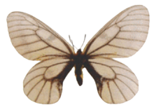
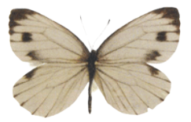
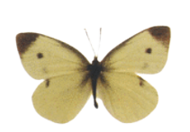
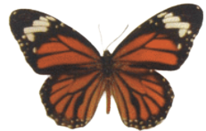

A high-altitude butterfly found in Japan, eastern China and Korea.
A butterfly of the family Pieridae.
A small- to medium-sized butterfly species of the whites-and-yellows family Pieridae.

This webpage contains 5 different butterfly species
|  | Parnassius glacialis | A high-altitude butterfly found in Japan, eastern China and Korea. |
|  | Pierisnapi | A butterfly of the family Pieridae. |
 | Pierisrapae Linne | A small- to medium-sized butterfly species of the whites-and-yellows family Pieridae. |
|
Mimathyma nycteis | A butterfly found in the East Palearctic. |
|  | Danaus genutia | One of the common butterflies of India. It belongs to the "crows and tigers". |